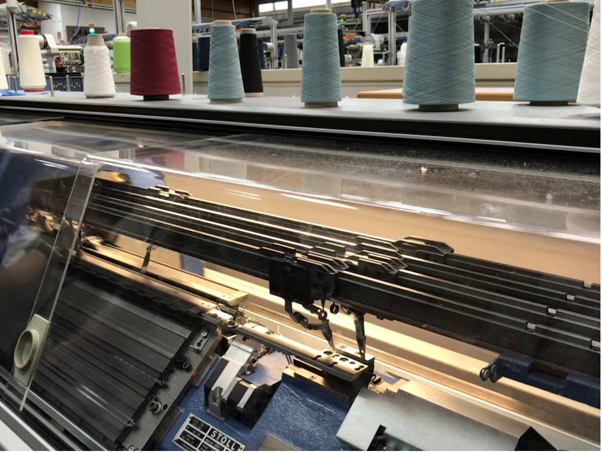
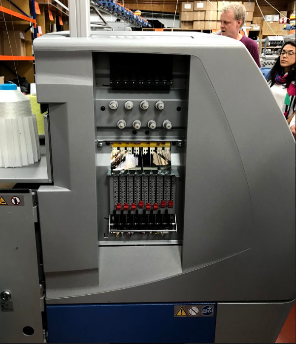
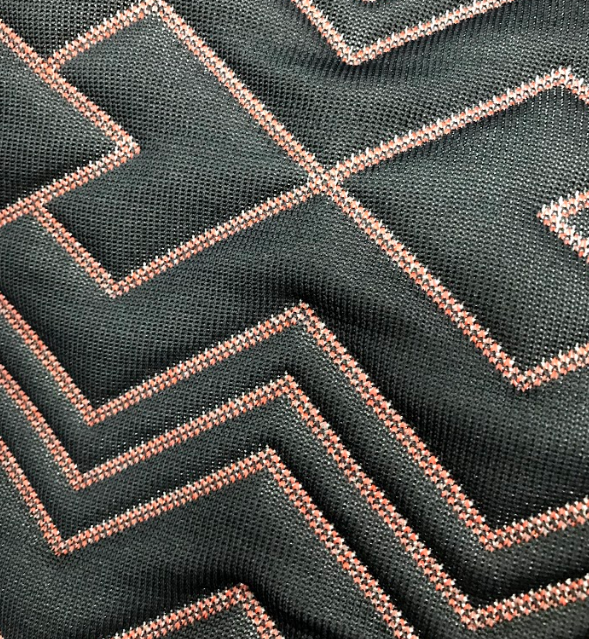
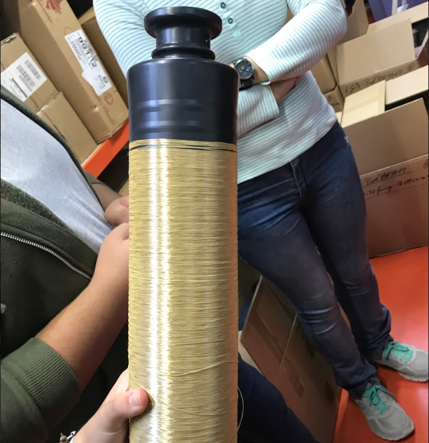

Excursion to textile factory.
The excursion to the textile factory was a really interesting one since we have to introduce fabrics in our wearables in order to make them more appealing and comfortable for our target patients. Before starting we were introduced to the main types of techniques used when creating fabrics: knitting and weaving.
- Knitting is defined as the process in which fabrics are produced by a set of connected loops from a series of yarn in a certain direction making the thread into cloth and other crafts.
- Weaving is defined as the process in which two types of yarn or threads are interlaced together to form a fabric or cloth. The two types of threads run in different directions, with the warp threads running lengthwise and the weft threads running crosswise or horizontally.
Thanks to the technological developments, now there are different machines that do both knitting and weaving automatically, just needing from human help when choosing the different parameters.
Furthermore, in this factory there are machines that can make both processes. What this means is that no sewing will be present in the different pieces of fabric, property that will give them greater resistance to stretching and will make them more difficult to break. An example of this can be seen in the third picture, in which we have a piece of fabric with both techniques and no sewing.
Finally we were introduced to some different textiles that combines with different materials could revolutionize the textile industry by crating clothes with different functions. An example of this can be seen in the fourth photo.
   Making the figure.
STEP 1:The first thing that needs to be done is to choose the plane in which you want to work.
Once you have chosen it, the next step I did was to go to the create tool and draw a sphere with the sphere function. , which will be the mobile part of my figure. Once I had the sphere, I selected the sketch mode, and with the arc function I drew and arch around the sphere, leaving enough space to let it rotate on the inside. The last step that I did was to close the sketch, so I drew a bigger arch and then a square at the bottom part.
 STEP 2:
STEP 2:
Once I had the closed sketch, I needed to transform it into a 3D body.
In order to do that I selected the revolve function , inside the create tools. Once I selected the function I was asked to select the face I wanted to rotate, the axis over which I wanted to rotate it and finally the amount of degrees I wanted. After doing all the process, I ended up with the space in which my figure was going to rotate.

STEP 3:
Once I had the 3D figure after using the revolve function, I needed to have into two separated pieces, in order to be able to atach them once it was printed.
For this task, I needed to use the split body function inside the modify library. In order to do that, the first thing I needed to do was to create the splitting tool. As I wanted to split it in half, what I did was to draw a straight line in the middle of the figure. Once I had finished my sketch, with the split body tool, I selected the body I wanted to split and the line as the splitting tool, and now I had my two different pieces.

STEP 4:
Once I had the 3D figure splitted into two different bodies, now I needed to create a solution that would let me attach the two different figures once I had printed them.
In order to do that, I thought that the best solution was to create two holes in one of the bodies and two cylinders in the other body, so the cylinders could penetrate in the holes and join the two bodies. Since I needed to make the holes and the cylinders in the exact same point of the figure, I drew a line in the middle of the figure, and then I drew two perpendicular lines over one of the bodies. Once I had the lines, first with the hole function from the create library I created a whole with 7,5 mm of depth and 7,5 mm of diameter . Once I had the holes, I moved the piece away and brought the other to the exact same place. Then, with the cylinder function from the create library, I a cylinder with 7,4 mm of height and 7 mm of diameter , in order to let it go inside the holes without any problem.

STEP 5:
Now all the stepts that I needed to do in order to make the case in which my figure was going to move were over, I thought that a good idea would be to create a cilinder endind in a thread shape in order to be able to attach different objects in the future.
Since I had created cylinder when doing the holes, now it was easy. I created a bigger cylinder that was joined to the ball and a smaller cylinder that was lying over the cylinder attached to the ball. The reason why I did that, is because I selected the thread function inside the create library in order to build it. Once I had the thread, I needed to make an only body, so with the combine function inside the modify library I created one only body.

FINAL STEP:
Once the figure was created, there was only one more thing that needed to be done. I had to select each different body in the browser, and from there I should save each one as a STL, in order to be able to print them the next day.